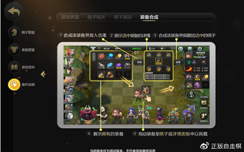

这就给大家带来多多自走棋的基础操作教学，让我们一起来看看吧.
DOTA2自走棋手游每局将有8位玩家参加游戏，通过每回合抓取公共卡池中的棋子，挑选搭配出不同的棋子组合，并与玩家和AI(野怪)对抗，获取金币，购入棋子，不断强化自己的组合来获得胜利。自走棋的玩法真实还原游廊多多自走棋，当前版本为端游自走棋3月23日版本。很容易上手，也容易迷上这款游戏。
点击左上方装备仓库(回合数的左侧位置)，即可看到您所拥有的装备，点击装备图标，即可看到装备属性和可合成选项。游戏内有自动合成按钮，您可以自动点击合成装备并佩戴给选中的棋子
棋子上阵后，等待倒计时结束，场上棋子将自动为您作战，对手是随机敌对玩家或者AI(野怪)，所以如何挑选强力棋子组成强力组合是本游戏的主要玩点。
多多自走棋玩法中，所有战斗都是自动进行的，您在购入棋子并拖动棋子上阵后，场上棋子将自动为您对战。
多多自走棋手游共有5种品质的棋子，从低到高依次是：普通/罕见/稀有/神话/传说，每种品质的棋子购买时的花费以及招募所需等级都各不相同。由于现在的棋子共55个，这里就不做长篇累述了，我们可以在游戏内的图鉴，查看到每个棋子的招募价格，棋子属性，种族职业。
如果场上和等待区有3枚同样的棋子，那么在棋子的头上会出现一个升星选项，点击升星选项，即可自动升星。
每三个一星棋子合成一个二星棋子，每三个二星棋子合成一个三星棋子，低等级棋子三星后质量有质变，高等级(四级或更高)的棋子升到两星后有质变。
(这里要说一下，德鲁伊职业由于职业特效，场上有2个德鲁伊存在时，有2个相同的1星德鲁伊就可升2星;场上有4个德鲁伊存在时，有2个相同的2星德鲁伊就可升3星)
每个棋子都带有不同种类的种族和职业，某些棋子还具有2个种族，比如龙骑士同时具有人类和龙的种族，以及骑士职业。
通过多个同种族或职业的多个棋子组合，可以形成各种类型的Buff(有益特效)以及Debuff(减益特效)，这也是多多自走棋的主要玩点。
Buff和Debuff都是叠加的(注意是叠加的)，比如9层战士Buff加8甲，加上6层战士Buff加7甲,再加上3层战士BUFF加6甲，总共增加21甲(强烈建议新手玩家走战士阵容)